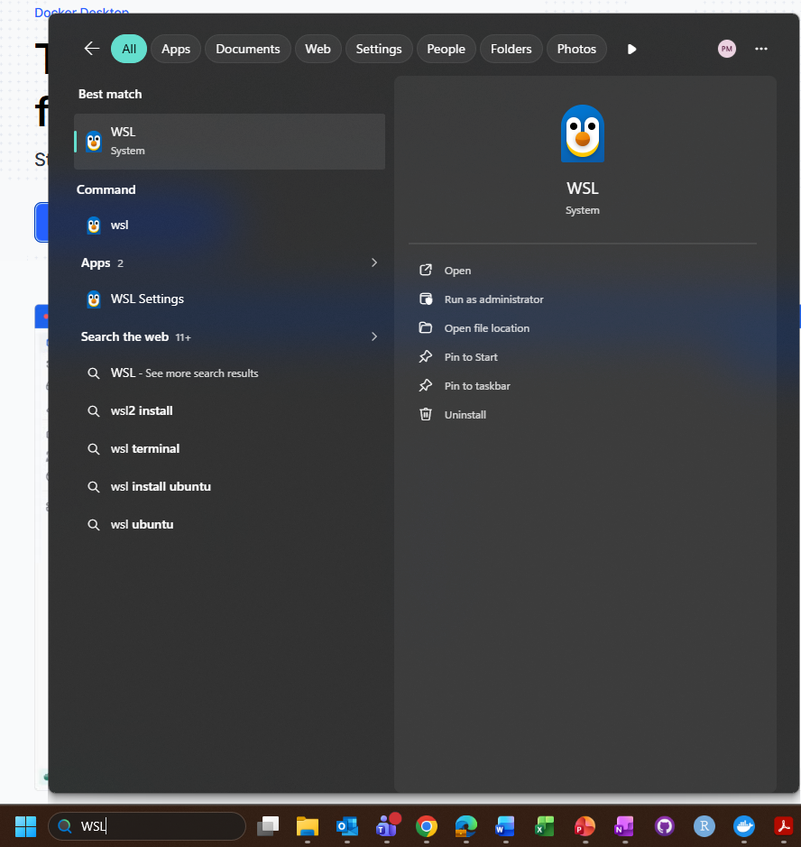
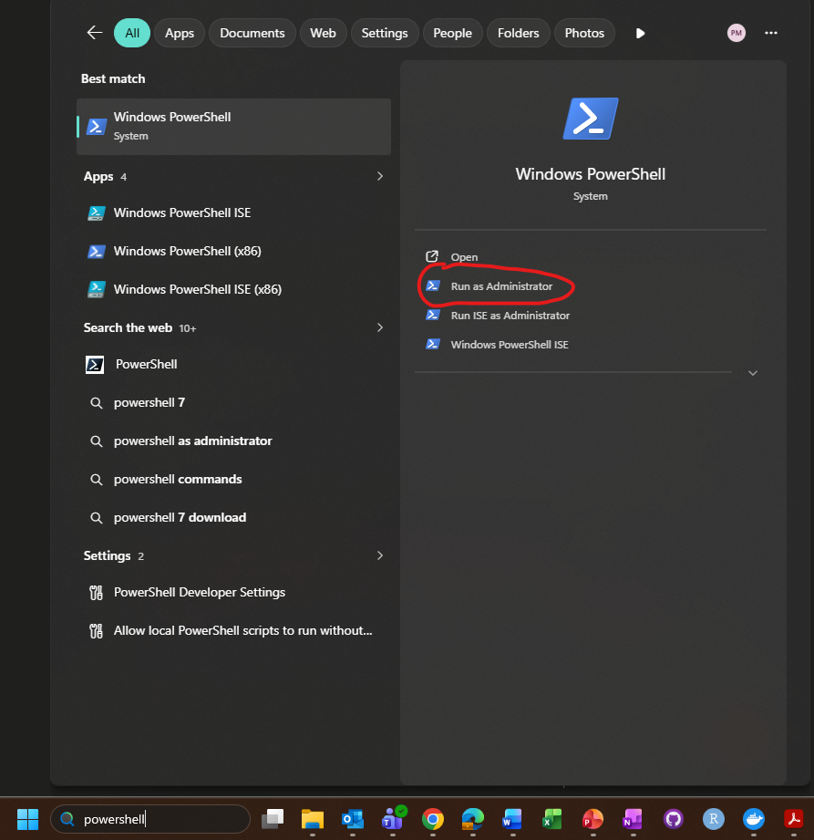
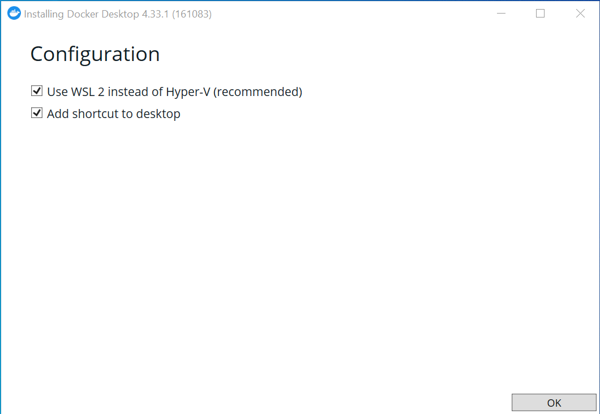
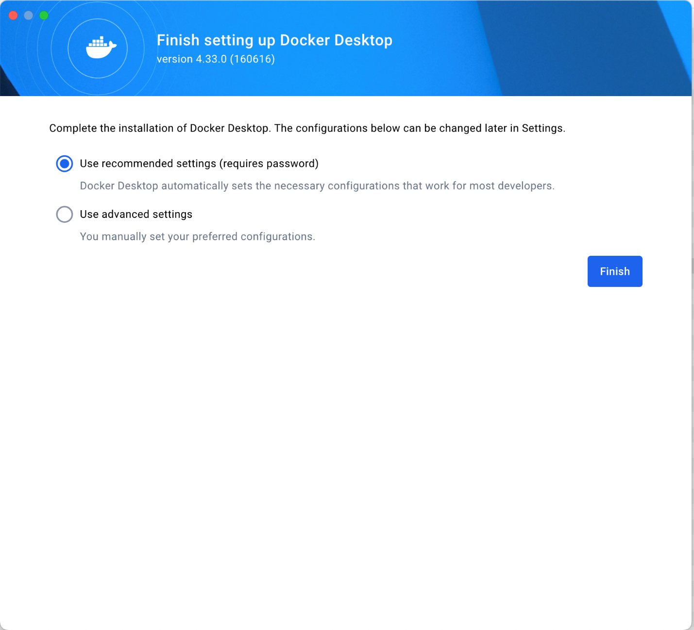
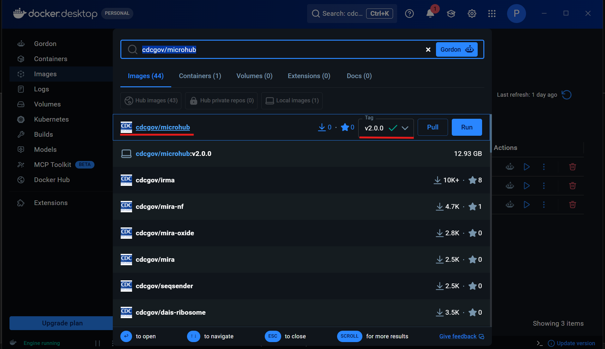
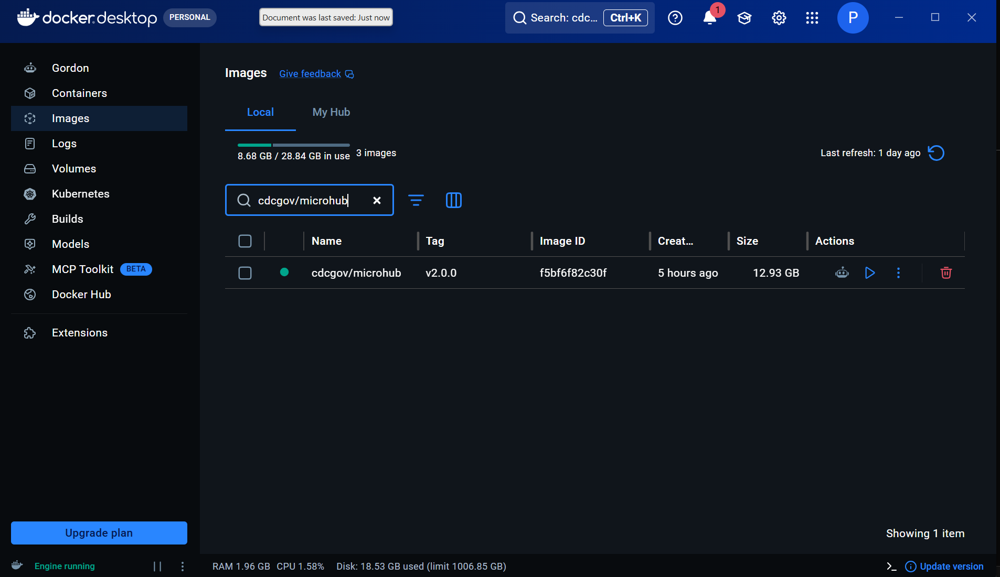

Install MicroHub
install.RmdInstall MicroHub with Docker Desktop
Docker allows you to run MicroHub inside an isolated container image on your computer with the application’s needed dependencies already included. In plain language, Docker Desktop is the program that starts and manages MicroHub on your laptop. You do not need to install R, Python, or modeling packages separately.
Docker Desktop is free to use for this workshop.
What You Will Do
There are four main steps:
- Install Docker Desktop.
- Open Docker Desktop and check that it works.
- Download the MicroHub image inside Docker Desktop.
- Start MicroHub and open it in your web browser.
The word image means the downloaded MicroHub software package. The word container means a running copy of that image.
Computer Requirements
- At least 8 GB memory available; 16 GB or more is recommended for smoother model runs.
- At least 10 GB of free disk space.
- A current web browser such as Chrome, Edge, Firefox, or Safari.
Download Docker Desktop
Download Docker Desktop for your operating system, then follow the setup steps below. If you are not sure whether your Mac has an Intel chip or an Apple chip, click the Apple menu in the upper-left corner of your screen and choose About This Mac.
Install Docker Desktop on Windows
Check for WSL 2
Before setting up Docker Desktop on a Windows computer, check whether Windows Subsystem for Linux 2 (WSL 2) is already installed. WSL 2 lets Docker run Linux-based software on Windows.
Type WSL in the Windows search bar and look for the WSL
application.

If WSL 2 is installed, continue to Run the Docker Desktop Installer. If WSL 2 is not installed, install it before running the Docker Desktop installer.
- Search for PowerShell in the Windows search bar.
- Open PowerShell as an administrator.

In PowerShell, run:
To run the command, type or paste it into PowerShell and press Enter.
Restart your computer when prompted.
Run the Docker Desktop Installer
- Open the
Docker Desktop Installer.exefile. - On the configuration screen, make sure Use WSL 2 instead of Hyper-V is checked. This is the default and recommended option.

- Click OK to start the Docker Desktop installation.
- When the installation is finished, click Close and restart if prompted.
Install Docker Desktop on Mac
Open the Docker Desktop installer for your Mac. During setup, use the default settings that allow Docker Desktop to automatically configure the necessary settings. If macOS asks whether Docker Desktop can make changes to your computer, approve the prompt.

Launch Docker Desktop and Finish Setup
Open Docker Desktop. The first time you open it, accept the Docker Subscription Service Agreement. Docker Desktop can take a minute or two to start. Wait until Docker Desktop shows that it is running before moving to the next step.
You may create a free personal Docker account, but an account is not required for the workshop.
Verify the Installation
This step checks that Docker Desktop can start a small test container.
Open PowerShell on Windows, or Terminal on macOS/Linux.
- On Windows, search for PowerShell from the Start menu.
- On macOS, open Terminal from Applications, Launchpad, or Spotlight search.
Run:
If Docker is working, you should see a message similar to:
Hello from Docker! This message shows that your installation appears to be working correctly.In Docker Desktop, the Images tab should also show
an image named hello-world.
If you see an error, make sure Docker Desktop is open and running, then try the command again.
Pull the MicroHub Image in Docker Desktop
In the search bar at the top of Docker Desktop, type
cdcgov/microhub. When the image appears, check that the tag
is set to v2.0.0, then click Pull.

The MicroHub image is large, so pulling it can take several minutes and may take around 15 minutes on slower connections. This is normal. Leave Docker Desktop open until the download finishes.
When Docker finishes downloading the image, you should see it under
the Images tab with the name microhub.

Run MicroHub
These steps start MicroHub on your computer.
- In Docker Desktop, go to the Images tab.
- Find the
cdcgov/microhubimage and click Run. - Open Optional settings.
- Set Container name to
microhub. - Set Host port to
3838. If Docker Desktop also shows a Container port field, set it to3838as well. - Click Run.
Open MicroHub
In Docker Desktop, open MicroHub by clicking the blue
3838:3838 link in the Port(s) column. The
container should have a green running indicator.
This opens MicroHub in your default web browser. You can also open http://localhost:3838 directly. You may bookmark this page in your browser.
Once the MicroHub container is running in Docker Desktop, you can use the app in your browser without being connected to the internet.
Stop and Restart MicroHub
When you are done using MicroHub, go to the
Containers tab in Docker Desktop and click the stop
button for the microhub container.
To start MicroHub again later, open Docker Desktop, go to
Containers, and start the microhub
container. If the container is not listed, return to the
Images tab and run the cdcgov/microhub
image again.
Setup Check
Confirm that:
- Docker Desktop is open.
- The
cdcgov/microhubimage appears in the Images tab. - The
microhubcontainer appears in the Containers tab and is running. - The MicroHub home page opens in the browser.
- You can reach the Data Upload & Settings tab in MicroHub.
Download any workshop datasets from the Downloads page and keep them with your workshop files.